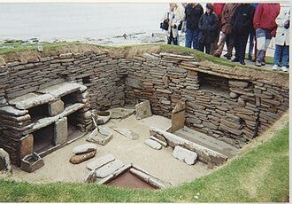
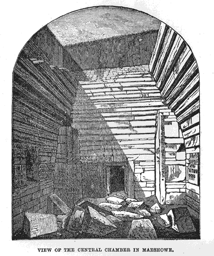
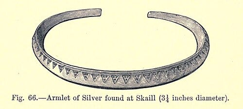
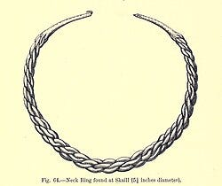

My earliest memories of my father’s genealogy revolve around a fascinating origin story: the Brass family were religious refugees known as Huguenots. I grew up understanding that they had fled France during a time of religious persecution and war, seeking peace in Scotland. The earliest written record of the Brass name in the Orkney Islands dates back to 1427. After their migration, the surname was anglicized from Bras or de Bras to Brass.
I didn’t think much about genealogy until adulthood. It was only when I stumbled upon intriguing details about the places my ancestors lived that I began to explore the mysteries of our origins more deeply. One story, in particular, captivated me: the Brass family’s connection to the largest Viking treasure discovery in Scotland.
Life in Orkney
The Orkney Islands, a wind-swept archipelago in the far north of Scotland, were home to many of my ancestors. In the 19th century, common occupations included farming, fishing, and straw-plaiting or weaving. Census records show that straw-plaiting was a frequent trade among my forebears.
In the 1850s, my great-great-grandfather and his brothers emigrated to Canada and the United States. Genealogical records place them in the Parish of Sandwick, a region that would later become central to one of Scotland’s most remarkable archaeological discoveries.
Ancient Echoes Beneath the Soil
Orkney’s history is staggeringly ancient. Settlements date back to 7000 BCE, with some researchers suggesting visitors arrived as early as 11000 BCE. Permanent stone structures were built at the Knap of Howar around 3900 BCE, making it the oldest preserved stone house in northern Europe. Some of Orkney’s megalithic rings even predate Stonehenge, and there’s speculation that Orkney’s builders may have influenced its construction.
“The soil bleeds archaeology.” — Local saying
One such site is Skara Brae, a Neolithic village occupied from 3180 BCE to 2500 BCE. It was uncovered after a massive storm in 1850, revealing stone dwellings that reminded me of something out of The Flintstones — stone dressers, bedframes filled with hay, and whale bone rafters once supporting sod roofs.

Another UNESCO site is Maes Howe, a 5,000-year-old chambered tomb. From the outside, it looks like a grassy mound, but inside lies a central chamber with three smaller ones built into the walls. To enter, visitors must crouch through a narrow passage lined with stones weighing up to 100 tons — the equivalent of a Boeing 747. On the Winter Solstice, sunlight pierces the corridor and illuminates the tomb’s interior.

In the 12th century, Norse knights returning from the Crusades took shelter in Maes Howe. Their runic graffiti — some humorous, some crude — also hinted at hidden treasure. One inscription reads: “Is to me said that treasure is hidden here very well.” Another points to a location “north and west” of Maes Howe — near the Bay of Skaill, close to where my family once lived.
The Skaill Hoard
In 1858, children chasing a rabbit near Sandwick stumbled upon what would become known as the Skaill Hoard — the largest Viking treasure find in Scotland. According to The Gentleman’s Magazine (May 1858), a boy named David Linklater found silver coins unearthed by rabbits. Word spread, and locals returned to the site, uncovering a heap of silver with warehooks. A scramble ensued, but authorities later recovered most of the treasure.
“At the sight of the bright metal there was instantly a scramble among those present, and by one or other of them all was carried away.” — The Gentleman’s Magazine, 1858
The hoard included massive pins, brooches, bracelets, necklaces, and silver coins, believed to date back to the earliest Scandinavian kings. The land where the treasure was found was leased by John Brass (my ancestor), who was compensated by the Crown. Family members in Orkney have told me that the Brass and Linklater families share a deep connection.


Today, the Skaill Hoard resides in the National Museum of Scotland in Edinburgh. Its discovery placed Orkney firmly on the map of Viking archaeology — not just in Scotland, but across the United Kingdom.
A Legacy Still Unfolding
As I continue to trace my lineage, I’ve uncovered another remarkable connection: I also descend from the Sinclair family, famously referenced in The Da Vinci Code. Their legacy — steeped in mystery, symbolism, and historical intrigue — will be explored in greater depth in my upcoming book, The Wheel of Life. It’s a story that intertwines with the Brass family’s journey and adds yet another layer to the rich tapestry of our heritage.
After more than 20 years of research, researching ancient texts, family records, and archaeological clues, I’ve come to believe that the story of my ancestors is part of something much larger — something that touches on the sacred, the secret, and the symbolic.
And perhaps most astonishing of all, through this journey of ancestral discovery, ancient ruins, and Viking treasure, I believe I have found the true meaning of the Holy Grail.
Not a chalice. Not a relic. But something far more profound.